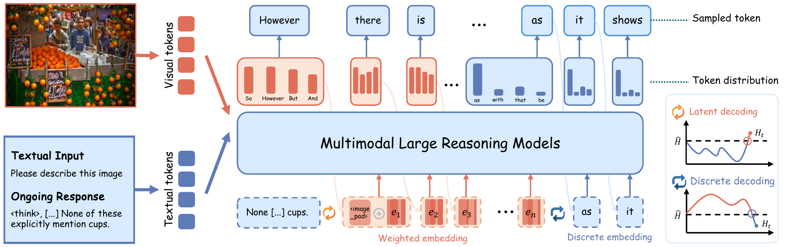
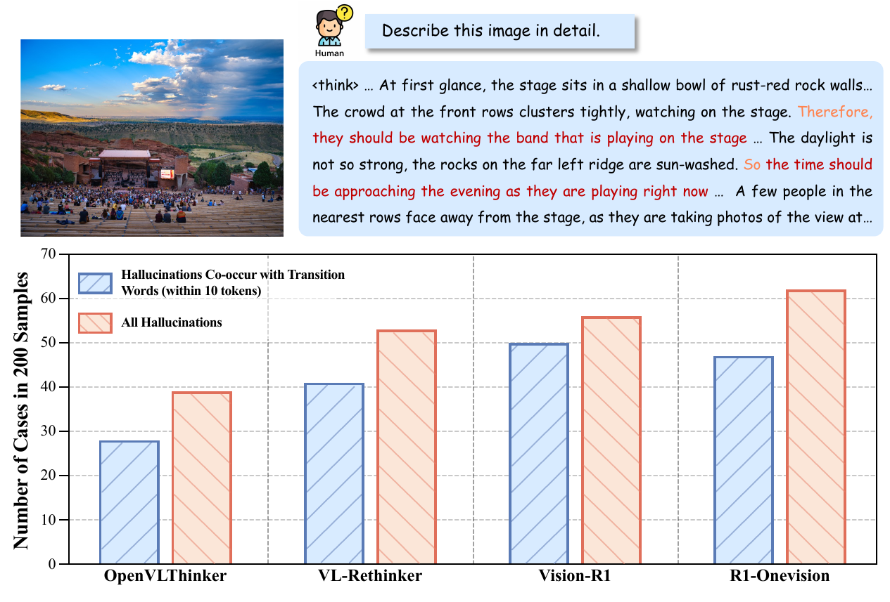
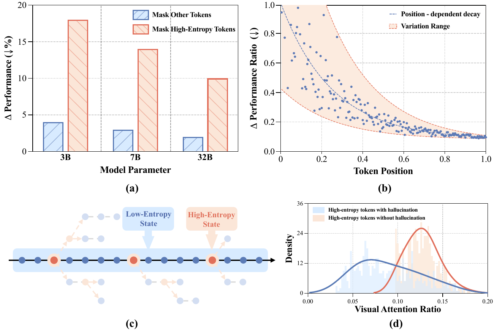
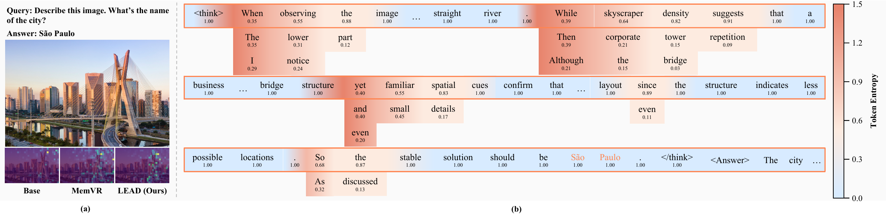
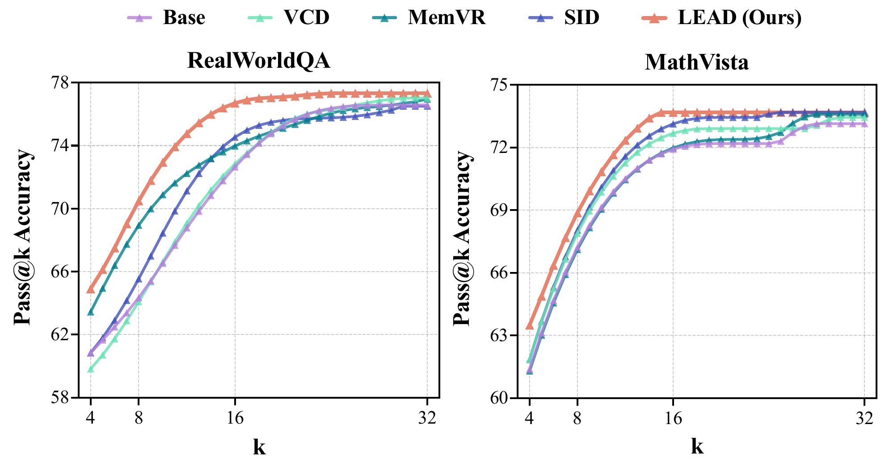
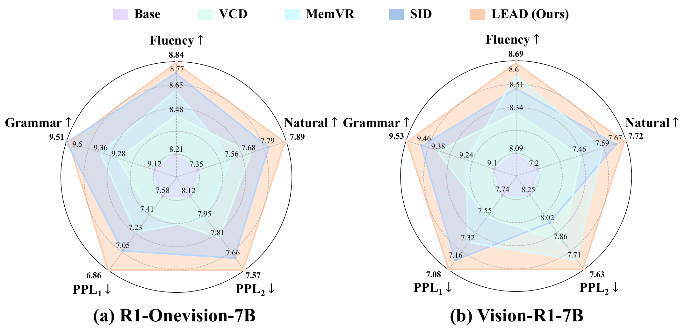

方法概览
LEAD 的核心思想是把 token-level entropy 当作推理不确定性的信号。当模型处于高熵状态时，单个采样 token 往往不足以表达真实的语义竞争关系，因此 LEAD 直接利用完整 token 分布构造概率加权 embedding，保留多个候选语义；当熵回落后，再切换回标准离散 decoding。与此同时，方法还会在关键的不确定阶段注入视觉锚点，强化视觉 grounding，减少幻觉传播。

关键观察与动机
这篇工作首先从推理过程本身出发，分析幻觉出现的位置与不确定性的关系。一个直接发现是：在多模态大推理模型中，幻觉往往与 because、however、so、but 等转折或过渡节点共现。进一步的 token-level 分析显示，高熵 token 并不是可以忽略的噪声，它们反而是决定后续推理方向的关键节点；并且当这些高熵 token 与幻觉相关时，模型通常分配给视觉内容的注意力更少。


定性可视化分析
LEAD 不仅改善最终答案，还改变了模型在推理过程中的行为模式。从可视化上看，方法能够在高熵阶段维持更丰富的 token 分布，并在关键时刻重新分配视觉注意力，从而避免模型在不确定阶段脱离图像内容继续"顺着语言惯性往下想"。

主要结果
实验结果表明，LEAD 不只是提升单一基准上的最终分数，而是在 sample efficiency、reasoning efficiency 与文本质量之间取得了更好的综合平衡。它能在更小的 k 下更快达到更高的 Pass@k 准确率，也能以更短的平均推理长度获得更高的正确率，并在 fluency、naturalness、grammar 与 perplexity 上维持或提升生成质量。



消融研究
消融结果进一步验证了 LEAD 的设计选择。动态 entropy threshold 优于固定阈值策略，说明推理过程中需要根据不确定性自适应切换 reasoning mode；此外，discrete reasoning window 也并非越大越好，中等大小的 window 更能在语义探索与稳定收敛之间取得平衡。